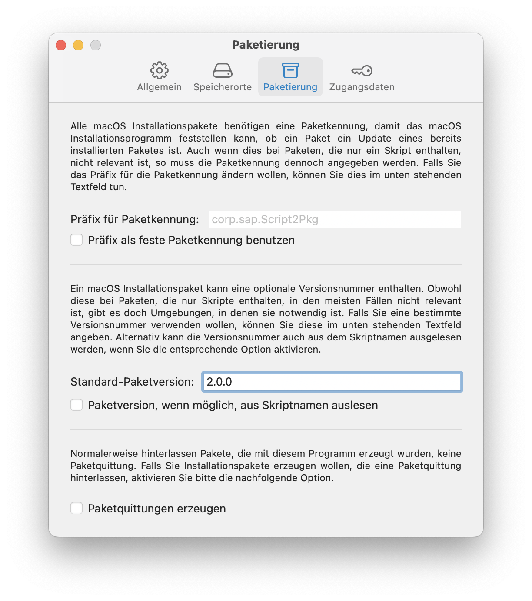
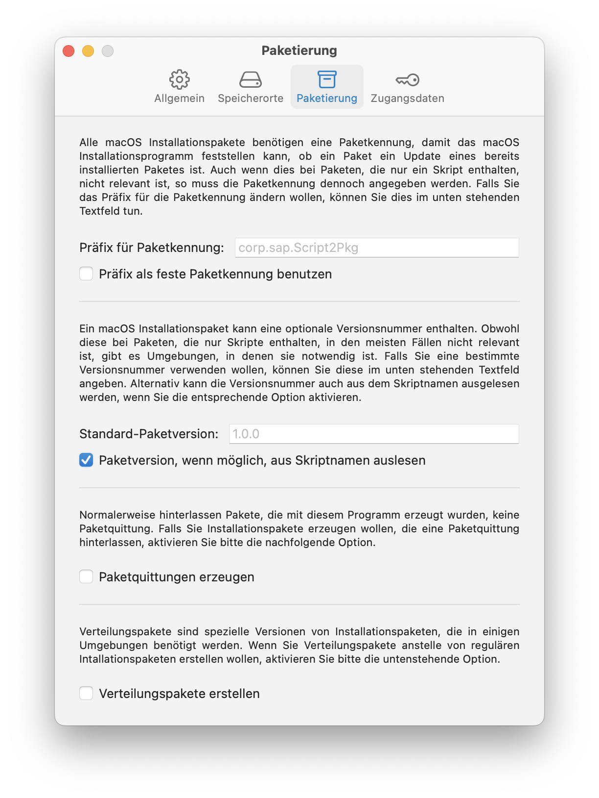

Script2Pkg
Script2Pkg
Script2Pkg
Paketversion festlegen
Ein macOS Installationspaket kann eine optionale Versionsnummer enthalten. Dies ist besonders dann sinnvoll, wenn das Installationspaket eine Paketquittung hinterlässt, da sowohl die Paketkennung als auch die Paketversion in der Paketquittung enthalten sind. Weitere Informationen zu Paketversionen finden Sie im Glossar .
Standardmäßig wird bei Paketen, die mit dieser Anwendung erstellt werden, folgende Paketversion verwendet: 1.0.0
Um eine andere Versionsnummer zu verwenden, gehen Sie bitte wie folgt vor:
1. Wählen Sie im Menü Script2Pkg den Menüpunkt Einstellungen …

2. Wählen Sie die Option Paketierung .

3. Klicken Sie in das Textfeld mit der Bezeichnung Standard-Paketversion: und geben Sie die gewünschte Versionsnummer ein. Von nun an werden alle erstellten Pakete die angegebene Versionsnummer enthalten.

Die Anwendung kann auch so konfiguriert werden, dass sie die Versionsnummer aus dem Dateinamen des ausgewählten Skripts verwendet. Wenn Sie zum Beispiel ein Script mit dem Namen beispiel_3.0.0.sh auswählen, würde Script2Pkg ein Paket mit der Versionsnummer 3.0.0 erzeugen.
Wählen Sie im Menü Script2Pkg den Menüpunkt Einstellungen …
Wählen Sie die Option Paketierung .
Aktivieren Sie die Option Paketversion wenn möglich aus Skriptnamen auslesen . Script2Pkg wird von nun an versuchen, in den Namen der ausgewählten Skripte eine Versionsnummer zu finden und würde diese dann als Versionsnummer für das entsprechende Paket verwenden. Sollte der Name des Skriptes keine Versionsnummer enthalten, wird stattdessen die Standard-Paketversion verwendet.

Standardeinstellung wiederherstellen
Um die Standardeinstellung wiederherzustellen, löschen Sie bitte den Text, den Sie im Textfeld Standard-Paketversion: eingegeben haben. Falls zutreffend, deaktivieren Sie bitte außerdem die Option Paketversion wenn möglich aus Skriptnamen auslesen .